天安河原/宮崎県
宮崎県最北部、高千穂町。
ご存知、天孫降臨の地である。
天照大神の孫、邇邇芸命（ニニギノミコト）が天から地上に降りてきた地とされている。
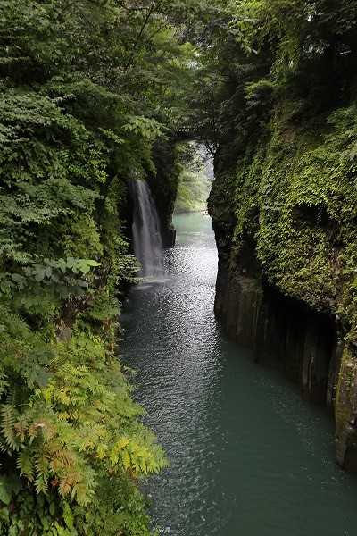
そんな高千穂には高千穂峡や高千穂神社など神話にまつわるスポットが目白押しだ。
周辺は結構な高低差なのに延々と棚田が広がっており、さすが稲作を伝えた邇邇芸命降臨の地だわい、などと勝手に感動したりして。
で、高千穂峡から数キロ離れたところにこれまた古事記でお馴染み、天岩戸を祭る天岩戸神社がある。
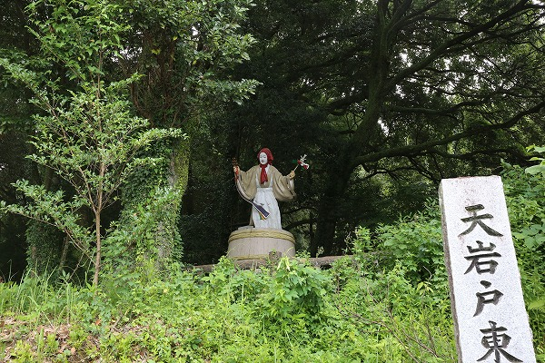
神社には天岩戸伝説に登場する天鈿女命や手力男命の人形が点在しており、珍神社臭がプンプンするのだが、実際にはごくごく真面目な神社でした。
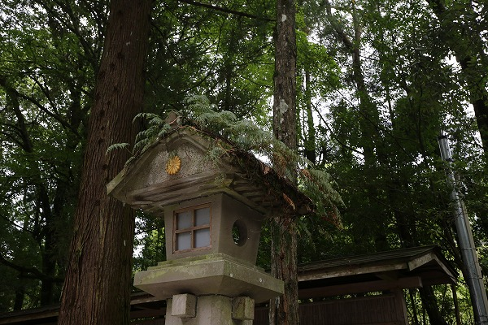
で、肝心の御神体の天岩戸は数名づつのグループで拝観するのだが、川の向こうの崖にあるという。
撮影厳禁なので画像はないが、それ以上に草がボーボーでどれが天岩戸なのか良く判りませんでした…。
…というわけで気を取り直して天岩戸神社から歩いて天安河原に行くことにした。
天安河原とは天照大神が天岩戸に隠れた際、八百万の神々が集りどうやって出そうか相談したと言われている場所である。
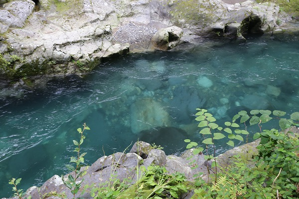
天岩戸神社から川沿いの遊歩道を歩いていく。
恐ろしいほどに水が綺麗だ。川底が丸見え。
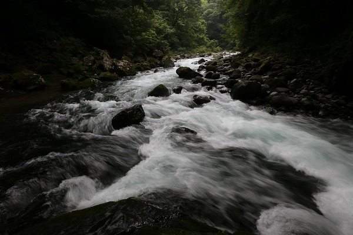
岩戸川が急カーブして土呂久川と合流する辺りに天安河原はある。
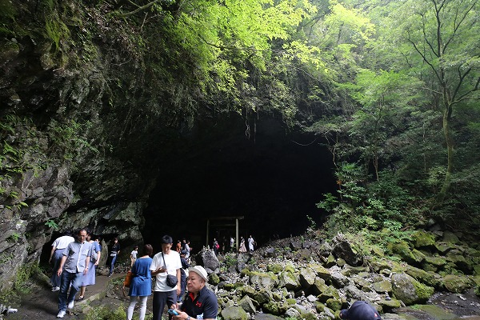
こんな感じです。
夏休みという事もあって大勢の観光客が訪れていた。
一説にはパワースポットとして大人気なのだとか。
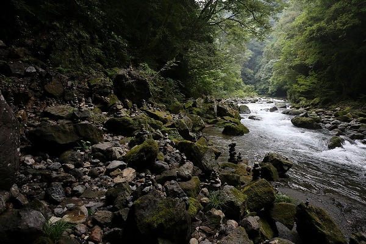
河原にはたくさん小石が積まれている。
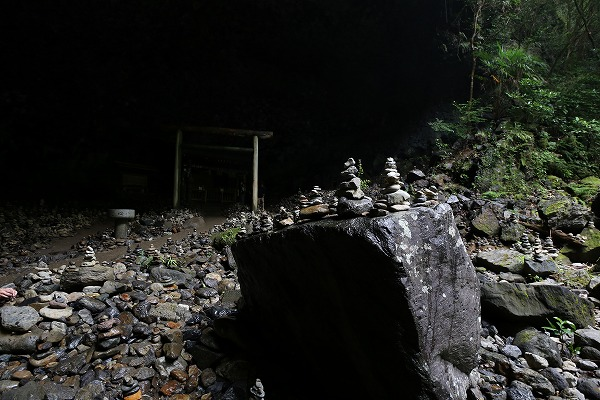
石積みといえば、一般的には死者供養のためだが、たまに神を崇める際にも石を積むことがあるという。
もっともここの石積みは戦後観光客の間で広まったもので、石を積めば願い事が叶うというもの。
つまりそんなに歴史も背景もない習俗なのだ。
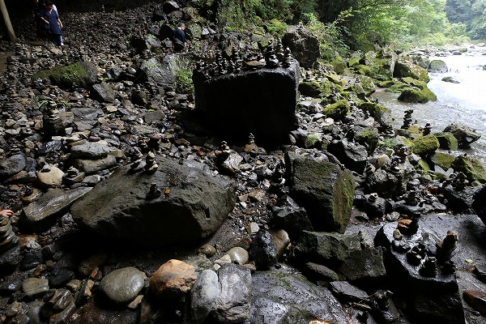
とはいえパワースポットさんたちが大勢やって来るだけに石積みの数も半端じゃない。
石積みを蹴飛ばさないように気を付けて歩かなければいけないのだ。
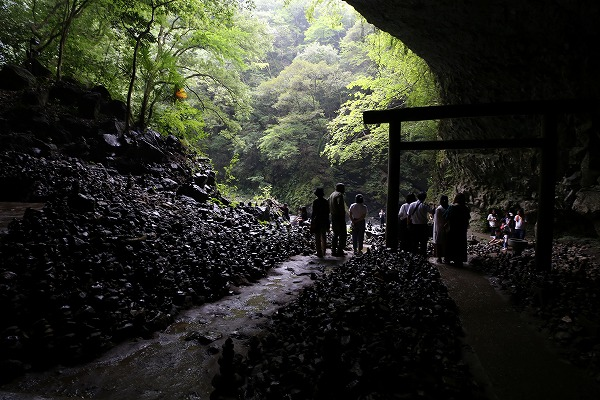
河原の奥には仰慕窟という洞窟がある。
どっちかというとこっちの方が天岩戸っぽいんですけど。
というか古事記的にいえば黄泉の国のイメージにぴったりの場所だ。
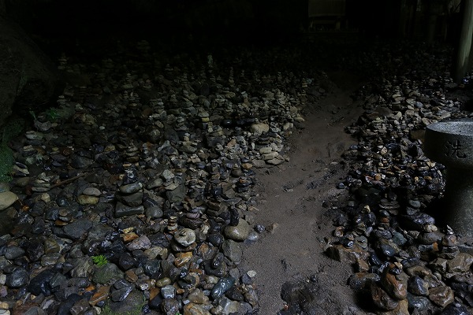
洞窟の中にも勿論無数の石積みが。
これで地蔵と風車と人形があったら完全に賽の河原ですよ。
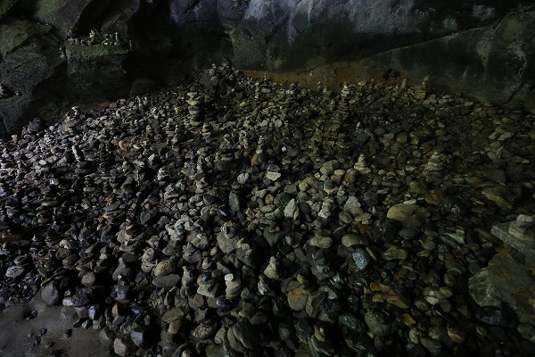
頭では「これは観光客が願いを込めて積んだ石だ」と理解していてもやはり大量に石を積んだ光景というものはどうしても死者供養を連想してしまう。
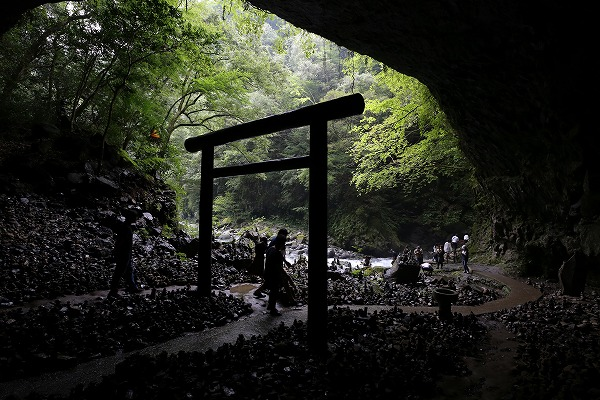
洞窟の中に積まれた大量の石積み。
見ればやはり石を積んでいる人達がいた。パワースポットのパワー恐るべし。
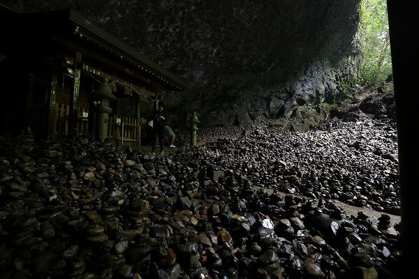
洞窟の一番奥には社がある。
祭神は思兼神と八百万の神。
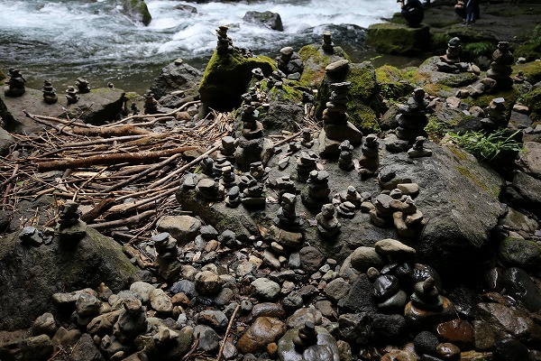
ちょっとしたスペースにまで石積みがなされている。
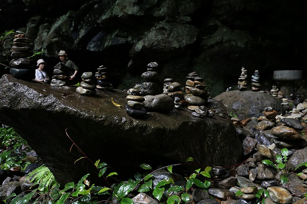
数日前までの豪雨でびっしょりと濡れた大量の積み石は鈍い光沢を放っていた。
神代からの聖地ではあるが、戦後になってさらにパワーアップされた珍しいケースの聖地といえよう。
2019.08.
珍寺大道場 HOME